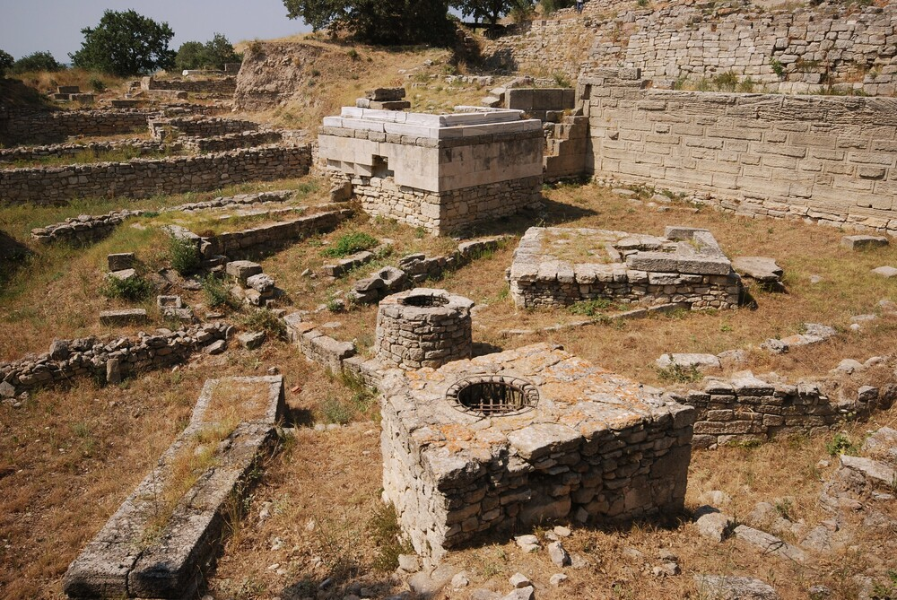

The Valley of the Kings is an ancient burial site located on the west bank of the Nile River in Egypt, where pharaohs and noble families of the New Kingdom (c. 1550-1070 BCE) were entombed. It is renowned for its richly decorated tombs, including that of Tutankhamun, and its archaeological significance in understanding ancient Egyptian culture and beliefs about the afterlife.
Odysseus' Palace at Ithaca, Greece
The real-life palace of Odysseus is believed to be located on the Greek island of Ithaca, specifically at a site called "Neraki," near the village of Vathy. Archaeological excavations have uncovered remnants of a Mycenaean palace, including walls, pottery, and other structures, which many scholars associate with the legendary king of Ithaca, reflecting the grandeur and historical context of Homer’s epic tale.
Stonehenge, England
Stonehenge is a prehistoric monument located in Wiltshire, England, consisting of a circle of massive standing stones, some weighing up to 40 tons, arranged in a unique formation. Believed to have been constructed between 3000 and 2000 BCE, it is thought to have had ceremonial, astronomical, and religious significance, though its exact purpose remains a mystery.
Knossos, Greece
Knossos is the largest and most significant archaeological site of the Minoan civilization, located on the island of Crete, Greece. This ancient palace complex, dating back to around 1900 BCE, is renowned for its advanced architecture, colorful frescoes, and complex layout, which include elaborate storage rooms, courtyards, and intricate plumbing systems.
Mount Fuji, Japan
Mount Fuji is Japan's highest and most iconic peak, standing at 3,776 meters (12,389 feet), and is an active stratovolcano located on Honshu Island. It holds great cultural and spiritual significance in Japanese mythology, often depicted as a sacred site and the home of the goddess Konohanasakuya-hime, symbolizing beauty, strength, and endurance.

Ruins of Troy, Turkey
The ruins of Troy, located in modern-day Turkey at Hisarlik, are the remains of an ancient city once thought to be purely legendary, but now confirmed through archaeology. Excavations have uncovered multiple layers of settlements, with walls, gates, and artifacts that correspond to the famous Trojan War described in Homer's *Iliad*, offering insights into both myth and historical reality.